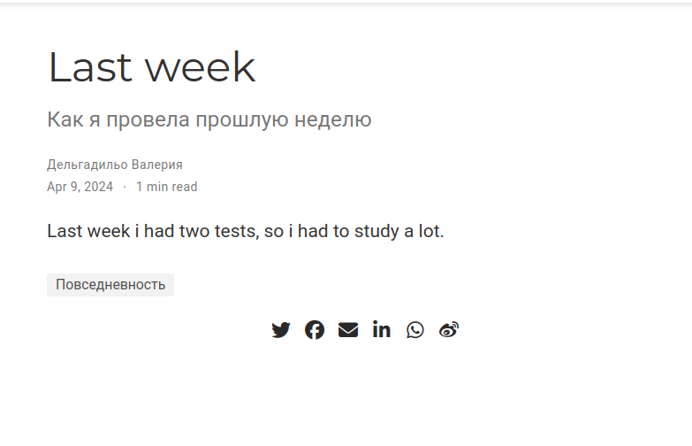

Целью работы является освоение новых команд терминала, связанных с конструктором статических веб-сайтов Hugo, приобретение практических навыков изменения информации о владельце сайта и добавления новых постов, а также более детальное изучение файлов директории blog персонального проекта.

Освоили новые команды терминала, связанные с конструктором статических веб-сайтов Hugo, приобрели практические навыки изменения информации о владельце сайта и добавления новых постов, а также лучше познакомились с файлами в директории blog персонального проекта.